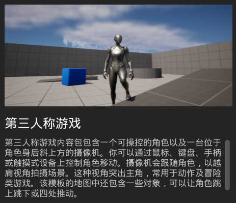
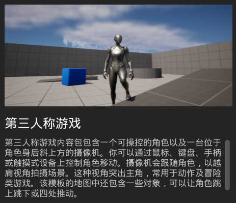

快速入门
使用模板 第三人称游戏 与 默认设置 新建项目

建立完成后使用引擎的初始载入地图 运行游戏
将会在 Player Start 处生成可操控的角色
输入 W\S\A\D 或 方向键 进行移动
移动鼠标控制 视野
输入 空格 跳起
最后使用 ESC 结束运行
Date: 2022/05/24 14:37:53Lastmod: 2022/05/26 01:36:13
Pages: 1Sections: 0
快速入门
使用模板 第三人称游戏 与 默认设置 新建项目

建立完成后使用引擎的初始载入地图 运行游戏
将会在 Player Start 处生成可操控的角色
输入 W\S\A\D 或 方向键 进行移动
移动鼠标控制 视野
输入 空格 跳起
最后使用 ESC 结束运行